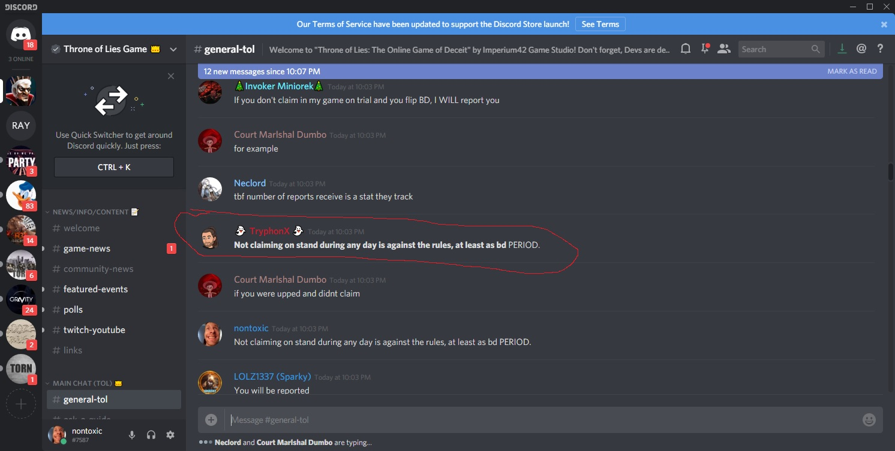

Hello,
First off, I want to say that I greatly enjoy the game, finding it as a former Town of Salem player who heard about Throne of Lies through word of mouth. I don’t normally make complaints online, as I know that a few onions on my burger here and there are not the end of the world. I would however like to voice my concerns over a trend I’ve seen in one of my favorite games, after playing for 6 months. In most games, sub-optimal play is differentiated from reportable offenses. However, after experiencing a similar situation so many times, I took to discord where i had sparked a rather heated discussion until this ultimatum this was given:

Essentially, this moderator has stated that “not claiming on the stand on any day is against the rules, at least as a bd, PERIOD”
I feel that this goes against the spirit of the game, and that it weaponizes reporting as a tool for BD to use to out any claims that otherwise would have been kept under wraps. This rule essentially forces every single player to claim, evil or not, as the only players who are able to withhold their claim are either evil or breaking the rules, and thus are free to be executed if evil, and reported it not.
If it is the case that “not claiming on the stand on any day is against the rules, at least as a bd, PERIOD”, than this should be codified in the rules more specifically than “going against the win condition of your team”. As it is, players are using “no claim, report this” as a legitimate metagaming tool to achieve their goals. If this is the actual rule, then really what is means is that all BD players are required to claim on the stand, and any evil/neut players that choose not to claim are essentially revealing themselves. This goes against the spirit of a game based around deception and omission, for the sake of players who have only confirmed themselves as good, and unnecessarily forces everyone to play into a certain ‘meta’.
If players are considered game throwing when withholding claims, why not just have the game show player’s claims when they are placed on the stand?